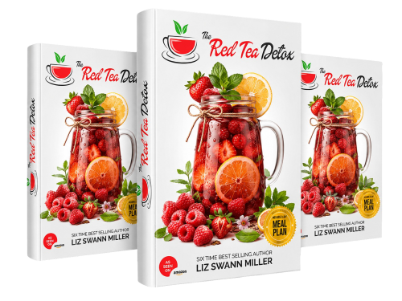

⚡️The Official Medicinal Red Tea™ – BRAND NEW! ⚡️ 80% Comms
Product profile · Marketplace data 2026-10-09 · Sales-page research 2026-10-09 · Categories: Health & Fitness

Marketplace record
| Product type | Downloads |
|---|---|
| Price | $37.00 (Single payment) |
| Affiliate commission | 80% |
| Refund window | Per the vendor's sales page — check the official page before buying |
| Vendor | green4home (listed since 2026-08-19) |
| Marketplace stats* | Cart conversion — · cancel rate — · affiliate earnings/sale $29.60 |
* Vendor-side marketplace statistics reported by Digistore24; they depend on traffic quality and are not a forecast.
Vendor's marketplace description
This Is The NEW #1 Conversion MONSTER On Digistore24. The Official 14-Day Red Tea Detox™ Weight Loss Offer — Now Available on Digistore24 We know what you want: offers that actually convert on cold traffic, compliance that doesn't get your ad accounts banned, and a backend funnel that squeezes every possible dollar out of a lead. Our previous offers crushed the market, but our newest release is co…
From the vendor's sales page
Page title: Medicinal Red Tea
Opening copy
I am a mother, a Naturopath, best-selling Amazon author and a holistic healing advocate. I graduated with degrees in Psychology and Naturopathy from Bastyr University and I further developed my herbal skills during an expedition deep into the heart of Africa. I lived there with a remote Kenyan tribe, learning how they use wild, natural elements to maintain boundless energy and perfect health, without ever touching a synthetic diet pill or stepping into a modern clinic.
After a difficult and complicated pregnancy, I was put on extended bed rest. Forced to give up my active lifestyle, I was trapped in one room for weeks. I became sluggish, developed a sweet tooth, and gained 41 pounds of stubborn excess fat. I was ashamed, frustrated, and felt like a fraud. I was in constant emotional agony, knowing my husband was no longer physically attracted to me
The time-tested weight-loss techniques I usually prescribed didn't provide much relief. For months, I was trapped in a shell I didn't recognize. I went from feeling helpless and depressed to getting my life back after a perilous trip to deep Africa. So much that I risked my life, faced a massive venomous snake, and survived to bring back a secret ancient recipe given to me by an African Shaman.
Prices mentioned on the page: $147 · $27, · $197 · $20 · $57 · $37
Guarantee language found: “60” — always confirm the current terms on the official page before relying on it.
Research method: raw HTML fetch · 2741 words on page · quality: rich · researched 2026-10-09. Full research file (MD) ↗
Where to check it out
Read the vendor's full sales page (current price, guarantee terms and bonuses are listed there):
View official sales page
That link is an affiliate link — if you buy through it we earn a commission from the vendor at no extra cost to you.